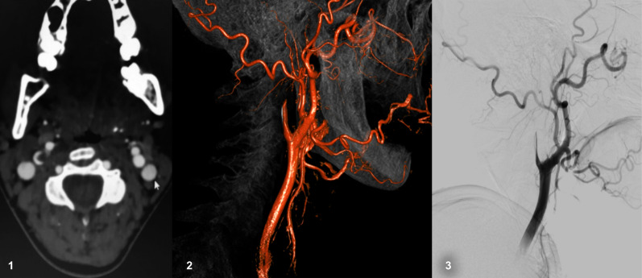
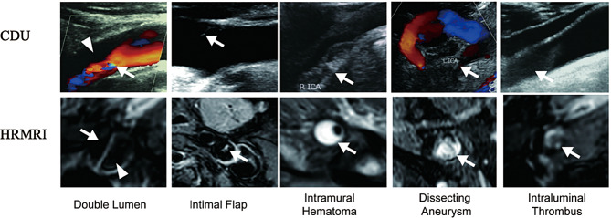
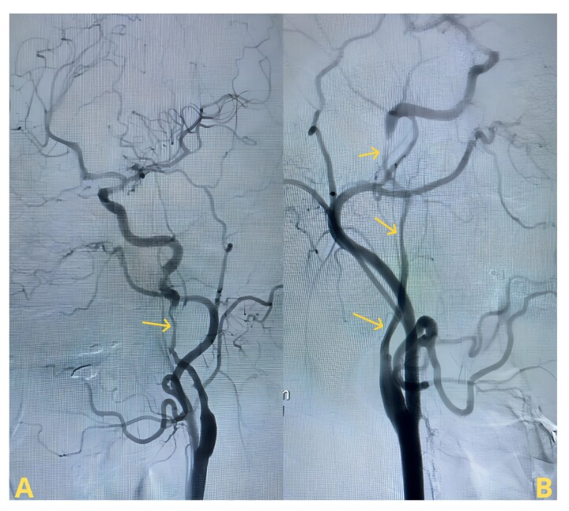
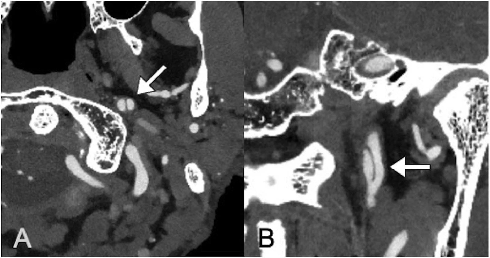

1773 — Bóc tách động mạch cảnh cổ / Cervical artery dissection (CAD)
Tags: pattern:hai-long pattern:vat-noi-mac pattern:huyet-khoi-thanh-mach pattern:hep-dai-doan pattern:tac-mach pattern:liem-tang-tin-hieu-T1 vung:dong-mach-canh vung:dau-co vung:co-canh score:CADISS protocol:CTA protocol:MRI-T1-fat-sat protocol:SA-Doppler protocol:DSA incidentaloma:khong
Mức chắc chắn (certainty): tổng hợp y văn (literature synthesis) — 2 đoàn hệ dân số (Olmsted 123 ca; Iceland 107 ca), 2 thử nghiệm ngẫu nhiên lớn nhất (CADISS 250 ca; TREAT-CAD 194 ca), 1 đoàn hệ 153 ca đối chiếu siêu âm Doppler cảnh (CDU) với MRI mạch thành phân giải cao (HRMRI), các nghiên cứu chuỗi xung T1 3D (46 ca; 31 ca), 1 nghiên cứu 53 ca theo dõi huyết khối thành mạch (IMH) bằng HR-VWI và 1 đoàn hệ 48 ca carotid web. 3 ca trong quiz là ca công bố, lấy nguyên văn ảnh gốc. Không có ca nguyên văn của nhóm.
Câu chốt: "hai lòng" trên siêu âm/CTA không đồng nghĩa bóc tách — bóc tách thật có huyết khối trong thành mạch (intramural hematoma, IMH) hình liềm, tăng tín hiệu trên T1 fat-sat, bắt đầu 2 cm sau chỗ chia đôi và chừa hành cảnh; carotid web là dải xơ cục bộ ở mặt sau hành cảnh, không có IMH, không hẹp dài. Hai bệnh này điều trị và tiên lượng khác nhau — nhầm web thành bóc tách dẫn tới kháng đông kéo dài không cần thiết; nhầm bóc tách thành web dẫn tới bỏ sót huyết khối thành mạch đang hoạt động.
1. Tổng quan bệnh học – cơ chế hình ảnh
1.1 Bóc tách xảy ra thế nào
- Rách nội mạc (intimal tear) → máu từ lòng thật ép vào lớp trung mạc (media), tách dọc theo thành mạch → tạo lòng giả (false lumen) chứa máu đông; lòng thật bị ép hẹp dần kiểu "vót nhọn" (tapered stenosis) hoặc tắc hoàn toàn khi lòng giả chèn kín.
- Máu trong lòng giả đông lại thành huyết khối trong thành (IMH) — chính là "khối" mà ta nhìn thấy trên MRI, và là nguồn thuyên tắc gây nhồi máu não.
- Vì sao vị trí điển hình là 2 cm sau chỗ chia đôi: đoạn này động mạch cảnh trong cố định vào mạc quanh mạch và xương, còn hành cảnh di động — chấn thương xoay/ngửa cổ tạo lực cắt (shear) đúng mặt phân cách; vì vậy bóc tách chừa hành cảnh, khác carotid web (đúng mặt sau hành cảnh) và khác mảng xơ vữa (đúng chỗ chia đôi).
1.2 TẠI SAO thấy được trên từng chuỗi xung (vật lý + mô bệnh)
- T1 fat-sat / T1 black-blood (CUBE, SPACE, VISTA): hemoglobin trong huyết khối chuyển dần thành methemoglobin (máu bán cấp), có thời gian T1 ngắn → tăng tín hiệu. Đây là dấu hiệu duy nhất nhìn thấy thành mạch, không phụ thuộc dòng chảy. Diễn tiến tín hiệu: 3 ngày đầu T1 trung gian, T2 tăng; sau đó T1 tăng rõ và giữ vài tuần; bóc tách mạn có thể trở về đồng tín hiệu — nên T1 âm không loại trừ bóc tách cũ.
- Fat-sat là bắt buộc: mỡ quanh cảnh rất sáng trên T1; nếu không bão hòa mỡ, dải mỡ sẽ che mất IMH và tạo "liềm sáng giả". Đây là lý do T1 không fat-sat là chuỗi xung vô dụng cho bệnh này.
- CTA: thấy lòng mạch chứ không thấy thành — biểu hiện là hẹp dài, nhẵn, vót nhọn ("string sign"), dấu ngọn lửa (flame-shaped occlusion), hoặc vạt nội mạc (intimal flap) khi có cản quang hai bên. Khi mạch tắc hoàn toàn, CTA không phân biệt được bóc tách với huyết khối thuyên tắc.
- Siêu âm Doppler màu (CDU): hai lòng = dòng chảy hai màu (lòng thật tốc độ cao, lòng giả chậm/xoáy); vạt nội mạc = dải tăng âm đung đưa trong lòng; nhưng đồng thuận với HRMRI về "hai lòng" là KÉM (153 ca) — tức CDU không đủ để chốt cơ chế.
- Huyết khối trong lòng (intraluminal thrombus) khác IMH: huyết khối trong lòng thật nằm trong dòng máu, không có vạt nội mạc ngăn cách; IMH nằm ngoài lòng thật, dưới nội mạc. Trên T1 black-blood, IMH bám thành hình liềm, huyết khối trong lòng lấp đầy lòng; trên T1 sau tiêm, chỉ niêm mạc lòng giả ngấm thuốc mới xác nhận hai lòng thật.
1.3 Số liệu nền (bắt buộc thuộc)
- Tần suất: 4,69/100.000 người–năm (Olmsted 2002–2020, 123 ca; cảnh trong 2,43, đốt sống 2,01), tăng từ 2,30 (2002–2006) lên 8,93 (2017–2020), ở nữ tăng 12 lần — phần lớn do chụp mạch không xâm lấn nhiều hơn.
- Tỉ lệ trong đột quỵ: 15–25% đột quỵ ở người < 50 tuổi.
- Triệu chứng (Iceland, 107 ca): đau 72%, rối loạn cảm giác 67%, vận động 49%, Horner 36%, đột quỵ 51%; bóc tách tái phát 4,6%.
- Tái phát đột quỵ: 2,4% (6/250) trong 1 năm (CADISS), 2,5% (5/197) ở nhóm chẩn đoán xác nhận — phần lớn xảy ra trong 2 tuần đầu, không phải rải đều cả năm.
- Tái thông: ở 3 tháng, vẫn còn hẹp/tắc ở 56/92 (60,9%) nhóm kháng kết tập tiểu cầu và 53/89 (59,6%) nhóm kháng đông (CADISS, p = 0,97) — nghĩa là chỉ ~40% thông hoàn toàn.
2. Mẫu hình + chẩn đoán phân biệt theo vị trí (Gamut)
Mẫu hình cốt lõi: hẹp dài–nhẵn–vót nhọn ± liềm tăng tín hiệu T1 trong thành ± vạt nội mạc ± phình giả (dissecting aneurysm).
- Theo vị trí:
- Hành cảnh/mặt sau (posterior bulb): carotid web (dải xơ, không IMH), mảng xơ vữa loét, thrombus treo.
- 2–3 cm sau chỗ chia đôi, chừa hành: bóc tách tự phát (kinh điển), FMD (chuỗi hạt, thường đoạn giữa–xa ICA).
- Sát nền sọ / đoạn xương đá: bóc tách chấn thương, phình giả, vỡ xương.
- Động mạch đốt sống V2 (trong lỗ ngang C6–C2) / V3 (quai tập bản đồ): bóc tách do xoay cổ, thủ thuật nắn chỉnh cột sống; thiếu máu hành não/tủy cổ.
- Hai bên: nghĩ bệnh mô liên kết (vEDS, Marfan, Loeys–Dietz), FMD, Eagle (mỏm trâm dài chèn) — xem ca 3.
- Mnemonic "DISSECT" (gamut bóc tách): Dissection tự phát, Iatrogenic (can thiệp, đặt catheter), Strain (gắng sức/nôn/ho), Systemic (bệnh mô liên kết, FMD), Eagle (mỏm trâm dài), Chiropractic (nắn cổ), Trauma.
3. Bảng so sánh phân biệt (ma trận đối chiếu)
| Thực thể (entity) | Hình ảnh điển hình | Chốt vào (rule-in) | Chốt loại (rule-out) | Gợi ý xác nhận |
|---|---|---|---|---|
| Bóc tách cảnh tự phát (CAD) | Hẹp dài nhẵn bắt đầu ~2 cm sau chỗ chia đôi, chừa hành; liềm T1 fat-sat tăng tín hiệu trong thành; vạt nội mạc; phình giả | Liềm T1 tăng tín hiệu + hẹp/vót nhọn + đau cổ–đầu/Horner cùng bên | Không có liềm thành mạch, hẹp cục bộ đúng hành cảnh → web/xơ vữa | MRI cổ T1 fat-sat 3D (SPACE/VISTA) hoặc HR-VWI; CTA lát ≤ 1 mm |
| Carotid web | Dải xơ mảnh, hình kệ, mặt sau hành cảnh, có ổ ứ cản quang sau dải; không hẹp dài; 48 ca: huyết khối dưới web 45,8%, đột quỵ 18,8% | Kệ ở mặt sau hành cảnh + không có IMH + người trẻ không yếu tố nguy cơ | Có liềm T1 thành mạch hoặc hẹp lan dài → bóc tách | CTA lát mỏng đa bình diện; DSA nếu còn nghi; không dựa vào siêu âm |
| Mảng xơ vữa loét | Dày thành lệch tâm, vôi hóa, đúng chỗ chia đôi; loét = ổ cản quang lõm vào mảng | Vôi hóa + tuổi > 60 + nhiều yếu tố nguy cơ + không đau cổ | Vôi hóa rõ + không IMH + không hẹp dài → loại bóc tách | CTA; MRI: xuất huyết trong mảng cũng T1 sáng (bẫy) |
| FMD (loạn sản cơ xơ) | "Chuỗi hạt" (string of beads) đoạn giữa–xa ICA, chừa hành và chỗ chia đôi | Nhiều chỗ hẹp–giãn xen kẽ, hai bên, nữ trung niên | Một ổ hẹp dài đơn độc + IMH → bóc tách | CTA/MRA toàn thân; tìm phình/tách ở thận–mạch chậu |
| Bóc tách chấn thương / phình giả | Tổn thương sát nền sọ/xương đá, túi phình giả, có vỡ xương/dập mô mềm | Cơ chế chấn thương + phình giả + vạt nội mạc | Không có chấn thương, tổn thương đúng hành cảnh → web | CTA có xương; DSA khi cần can thiệp |
| Huyết khối thuyên tắc (không bóc tách) | Tắc hoàn toàn đột ngột, không hẹp dài trước đó, không liềm thành mạch | Rung nhĩ/nguồn tim + tắc đột ngột + không IMH | Liềm T1 thành mạch → bóc tách | Siêu âm tim, Holter; MRI thành mạch để loại bóc tách |

*Ca bóc tách cảnh trong: (1) CT ngang — dấu liềm (crescent sign) tăng đậm độ ở thành mạch (máu trong thành); (2) dựng hình 3D và (3) DSA — tắc vót nhọn kiểu ngọn lửa (flame-shaped occlusion). Nguồn: J Vasc Bras 2021;20:e20200242 (PMC8483012), CC BY.*3.1 Năm dấu hiệu, hai phương thức — đọc cặp đôi

*Hàng trên: siêu âm Doppler màu; hàng dưới: MRI mạch thành phân giải cao. Năm cột: hai lòng, vạt nội mạc, huyết khối trong thành (IMH), phình giả bóc tách, huyết khối trong lòng. Nguồn: BMC Med Imaging 2026;26:219 (PMC13126898), CC BY-NC-ND — ảnh nguyên bản, không cắt/ghép.*- Đồng thuận giữa CDU và HRMRI (153 ca): tốt với IMH, huyết khối trong lòng và độ hẹp; trung bình với vạt nội mạc và phình giả; kém với "hai lòng". Kết luận thực hành: CDU phát hiện được IMH/huyết khối trong lòng (hai yếu tố liên quan độc lập với đột quỵ), nhưng không dùng CDU để chốt "hai lòng".
- Độ nhạy chuỗi T1 3D: T1 VISTA 3,0 T: Se 95,2% / Sp 100% (46 ca, 21 bóc tách); T1 SPACE 3D: Se 96,5% / Sp 94,5% so với T1 SE 2D: Se 92,9% / Sp 100% (31 ca). Giới hạn: khi tắc hoàn toàn, 6/17 ca vẫn không phân biệt được huyết khối trong thành với huyết khối trong lòng trên T1 VISTA.
- Siêu âm: độ nhạy ~70% khi bệnh nhân chỉ đau cổ/đầu, Horner hoặc liệt dây sọ (không thiếu máu não), 75–86% với động mạch đốt sống — nên không loại trừ bóc tách bằng siêu âm bình thường.
4. Protocol + quyết định điều trị
4.1 Chuỗi xung/chụp
- MRI cổ (ưu tiên): T1 fat-sat 3D black-blood (SPACE/VISTA/CUBE) trục + đa bình diện, lát ≤ 1 mm, phủ từ hành cảnh đến nền sọ và V1–V3; kèm MRA TOF (không cần cản quang) hoặc CE-MRA; DWI não cùng buổi để tìm nhồi máu.
- CTA: lát ≤ 1 mm, đa bình diện (MPR), cửa sổ mạch + xương; bắt buộc MPR — đọc lát trục đơn thuần bỏ sót vạt nội mạc. Chụp thì muộn 2–3 giây giúp thấy lòng giả chậm.
- CDU: đầu tay, rẻ, lặp lại được; giá trị chính là theo dõi tái thông, không phải chốt chẩn đoán.
- DSA: khi CTA/MRI không kết luận, khi tắc hoàn toàn cần phân biệt, hoặc khi can thiệp (bóc tách gây hẹp nặng có triệu chứng lặp lại).
- Theo dõi: lặp hình ảnh 3 tháng (đánh giá tái thông/phình giả) và 6–12 tháng nếu còn hẹp; không chụp lại mỗi tháng.
4.2 Kháng kết tập tiểu cầu hay kháng đông — số liệu thật
flowchart TD
A[Bóc tách cảnh có triệu chứng] --> B{Có tắc hoàn toàn<br/>hoặc lan nội sọ?}
B -->|Có| C[Kháng kết tập tiểu cầu<br/>aspirin ± clopidogrel]
B -->|Không| D[Kháng đông VKA/DOAC<br/>cân nhắc ưu thế]
C --> E[Đánh giá lại 3 tháng:<br/>hẹp/tắc còn?]
D --> E
E -->|Tái thông, không biến cố| F[Ngừng sau 3-6 tháng]
E -->|Hẹp nặng + tái phát| G[Stent/CEA hoặc can thiệp<br/>chỉ định chọn lọc]
- CADISS (2015/2019, 250 ca): không khác biệt giữa kháng kết tập tiểu cầu và kháng đông về đột quỵ cùng bên/tử vong (2,4% trong 1 năm) và về tái thông (p = 0,97).
- TREAT-CAD (2021, 194 ca): biến cố chính (lâm sàng + MRI) 23% aspirin vs 15% kháng đông vitamin K; khác biệt tuyệt đối 8% (95% CI −4 đến 21) — không chứng minh được aspirin không thua kém. Đột quỵ thiếu máu: 8% (7 ca) ở aspirin vs 0% ở kháng đông; chảy máu ngoài sọ nặng 1% ở nhóm kháng đông; không tử vong.
- Phân nhóm TREAT-CAD (173 ca): không tắc mạch → kháng đông OR 0,28 (0,07–0,86); có thiếu máu não + không tắc → OR 0,16 (0,04–0,55). Đây là gợi ý, chưa đủ để thành chỉ định.
- Thực hành: 3–6 tháng kháng đông hoặc kháng kết tập tiểu cầu (cá thể hóa theo nguy cơ chảy máu, có/không tắc, lan nội sọ); theo dõi 6 tháng TREAT-CAD: biến cố rất hiếm và đều là chảy máu — không có lý do kéo dài vô hạn.
- Can thiệp: stent/CEA chỉ khi tái phát triệu chứng dù đã điều trị nội khoa, hẹp nặng tiến triển, hoặc phình giả lớn; không đặt stent dự phòng cho mọi bóc tách.
5. Biến thể bình thường và cạm bẫy
- Cạm bẫy số 1 — xuất huyết trong mảng xơ vữa cũng T1 sáng: mảng xơ vữa có xuất huyết trong mảng (intraplaque hemorrhage) cho tín hiệu T1 cao giống IMH; khác biệt: vôi hóa + lệch tâm + đúng chỗ chia đôi + không hẹp dài, và không có vạt nội mạc.
- Cạm bẫy số 2 — huyết khối trong lòng vs IMH: cả hai đều T1 sáng. Phân biệt bằng T1 black-blood: IMH liềm, ngoài lòng thật; huyết khối trong lòng lấp lòng, có dấu hiệu viền khi có cản quang. Trong tắc hoàn toàn, đây là giới hạn thật của T1 (6/17 ca).
- Cạm bẫy số 3 — dòng chảy chậm giả tắc: trên CTA/MRA, dòng chảy rất chậm ở lòng giả hoặc đoạn hẹp nặng có thể giả "tắc"; chụp thì muộn hoặc DSA để phân biệt.
- Cạm bẫy số 4 — bóc tách cũ: IMH mạn có thể đồng tín hiệu T1 và chỉ còn hẹp nhẵn; T1 âm không loại trừ. So phim cũ, tìm phình giả và vạt nội mạc.
- Cạm bẫy số 5 — bỏ sót tổn thương thứ hai: bóc tách hai bên hoặc kèm bóc tách đốt sống gặp đủ nhiều để bắt buộc chụp toàn bộ trục; ca 3 dưới đây là ví dụ.
- Biến thể bình thường: hành cảnh giãn sinh lý và dòng xoáy ở xoang cảnh trên CDU tạo vùng trống tín hiệu giả "huyết khối"; mỡ quanh cảnh không bão hòa tạo "liềm sáng giả" trên T1.
- Bẫy hình học: vạt nội mạc chỉ thấy trên mặt phẳng vuông góc với trục mạch — luôn MPR đa bình diện; bóc tách chạy dọc nên lát cắt ngang một mình dễ bỏ sót.
6. Tự lượng giá — Blind Quiz
Ca 1 — Nam 45 tuổi, đau cổ trái sau khi nôn nhiều, rồi yếu nửa người phải. Nhìn CT ngang và dựng hình:
- Hỏi: (1) Dấu hiệu ở thành mạch cảnh trái? (2) Vì sao lòng mạch "vót nhọn" thay vì tắc ngang? (3) Cần chuỗi xung nào để chốt?
Bấm để hiện đáp án
- Dấu liềm (crescent sign): dải tăng đậm độ hình liềm ở thành động mạch cảnh trong — máu trong lòng giả. Dựng hình/DSA: tắc vót nhọn kiểu ngọn lửa, chừa hành cảnh.
- Vì sao vót nhọn: lòng giả chứa huyết khối chèn dần lòng thật dọc theo thành → hẹp dài, nhẵn, thuôn; huyết khối thuyên tắc thường cắt ngang đột ngột.
- Chốt: MRI cổ T1 fat-sat 3D black-blood (liềm tăng tín hiệu) + DWI não; CTA đơn thuần không loại trừ được bóc tách khi đã tắc.
- Nguồn ảnh: J Vasc Bras 2021;20:e20200242 (PMC8483012), CC BY.
Ca 2 — Bốn bệnh nhân trẻ, cùng "hẹp cảnh trong": so sánh CDU với HRMRI:
- Hỏi: (1) Dấu hiệu nào không đáng tin trên siêu âm? (2) Hai dấu hiệu nào trên CDU liên quan độc lập với đột quỵ? (3) Nếu chỉ có "hai lòng" trên siêu âm, có đủ chẩn đoán bóc tách?
Bấm để hiện đáp án
- Không đáng tin: "hai lòng" — đồng thuận CDU–HRMRI kém; vạt nội mạc và phình giả chỉ trung bình.
- Liên quan độc lập với đột quỵ: IMH và huyết khối trong lòng (giữ nguyên sau hiệu chỉnh và sau ghép cặp tỉ lệ).
- Không đủ: "hai lòng" có thể là dòng chảy song song trong hành cảnh giãn, vạt xơ của web, hoặc dòng chảy chậm; phải xác nhận bằng MRI T1 black-blood (IMH/vạt) hoặc CTA lát mỏng MPR.
- Nguồn ảnh: BMC Med Imaging 2026;26:219 (PMC13126898), CC BY-NC-ND.
Ca 3 — Nữ 38 tuổi, đau cổ hai bên + nhìn đôi; DSA dưới đây:

- Hỏi: (1) Có mấy tổn thương, ở đâu? (2) Vì sao phải tìm nguyên nhân hai bên? (3) Cần thêm phim gì?
Bấm để hiện đáp án
- Hai bên: DSA cho thấy bóc tách cảnh trong hai bên (mũi tên hai bên) — không phải một ổ.
- Vì sao tìm nguyên nhân: bóc tách hai bên gợi ý bệnh mô liên kết/FMD hoặc chèn ép cơ học; trong ca gốc là hội chứng Eagle — mỏm trâm dài 37,7 mm (phải) và 36,1 mm (trái) chèn động mạch cảnh.
- Thêm: CT xương đa bình diện đo mỏm trâm (ngưỡng thường dùng > 30 mm), MRA/CTA toàn trục để tìm bóc tách đốt sống, và đánh giá mô liên kết nếu hai bên không giải thích được.
- Phản biện: ca này không điển hình — bóc tách tự phát hai bên hiếm; đừng mặc định "tự phát" khi có chèn ép cơ học.
- Nguồn ảnh: J Vasc Bras 2026;25:e20250008 (PMC13078177), CC BY.
Ca 4 — CTA ngực/cổ ở bệnh nhân 64 tuổi, hẹp cảnh trong tiến triển:

- Hỏi: (1) Vạt nội mạc nằm ở đâu? (2) Vì sao cần MPR? (3) Khi nào cần DSA?
Bấm để hiện đáp án
- Vạt nội mạc (intimal flap): đường giảm đậm độ mảnh trong lòng động mạch cảnh trong, thấy rõ trên mặt phẳng dọc trục (B) trong khi lát ngang (A) chỉ thấy lòng bị chia đôi.
- MPR: bóc tách chạy dọc mạch, nên mặt phẳng vuông góc trục là bắt buộc; đọc lát ngang đơn thuần bỏ sót tới phần lớn vạt mảnh.
- DSA: khi không kết luận được trên CTA/MRI, khi tắc hoàn toàn cần phân biệt cơ chế, hoặc khi có chỉ định can thiệp.
- Nguồn ảnh: Radiol Case Rep 2026;21(11):5538–5543 (PMC13528219), CC BY-NC-ND.
Bài liên quan chéo
- 270 – Carotid web (dải xơ mặt sau hành cảnh — hàng phân biệt bắt buộc)
- 260 – Bệnh mạch cảnh do xạ trị (hẹp dài nhẵn không vôi — bẫy "giống bóc tách")
- 249 – Rò động mạch cảnh – xoang hang chấn thương (bóc tách chấn thương nền sọ)
- 211 – Đột quỵ não (DWI, lãnh thổ mạch)
- 200 – Tổng quan hệ Thần kinh
Ảnh
- Tên file
1773_slug_Modality_SourceID.ext; nguồn + giấy phép từng ảnh ởimages/CREDITS.md. - Không crop, không kéo giãn, không tạo composite: hai ảnh CC BY-NC-ND (PMC13126898, PMC13528219) là nguyên bản; hai ảnh CC BY (PMC8483012, PMC13078177) cũng giữ nguyên khung.
Không dùng để chẩn đoán độc lập khi chưa có người hướng dẫn.